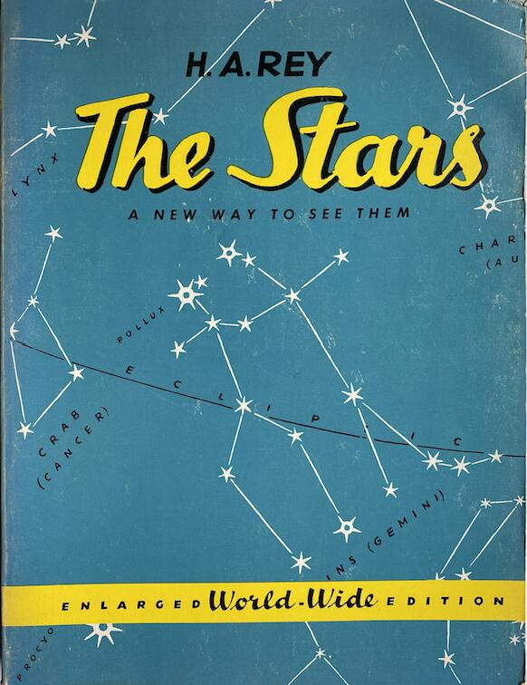
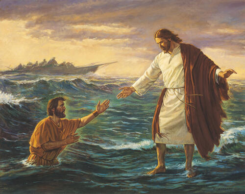
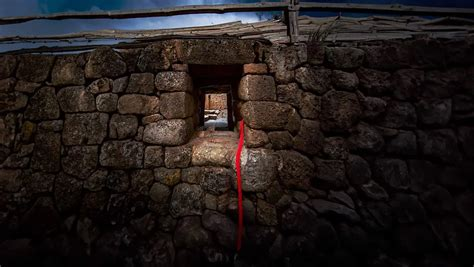
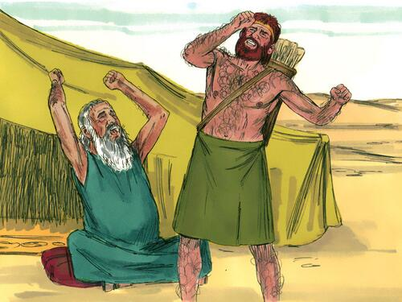
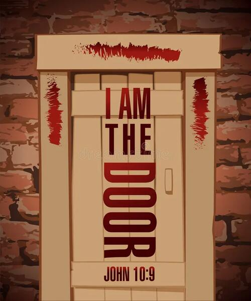

I had been reading about comparitive mythology and the passing of scientific information through time via mythology in the book Hamlet's Mill. Quite a bit of fascinating information is contained therein. As a reference for stars and the constellations, I had acquired H. A. Rey's The Stars, A New Way to See Them. It provides an easier way to view constellations and the stars.
So it was there next to me, and I found myself looking at its cover. With the plane of the ecliptic, the path of the sun, drawn through the cover, something new popped out at me. The ecliptic can be seen as a number of things, the surface of the world ocean, the edge of the underworld, etc... Viewing it as water, I saw that "Castor" of the Gemini Twins, could be seen as standing on that water, while "Pollox" was seen to be halfway into the water. Doesn't this remind you of something? It hit me in one of those flashes in which it seems so many connections are all made at once. The first of which was of Jesus walking on the Sea of Galilee and reaching down to save the drowing Peter. Let us not forget that according to Christianity, Jesus is the Way, the Door to eternal life. Jesus as Castor on the left is seen as the surviving, immortal twin as he is above the ecliptic, while Peter as Pollux is the one to fall.

I had noted before the preponderance of twins in the Bible. Most were in the Old Testament, while there were a few examples in the New.
Here I will list the surviving, or elder, twin as the first in the pair.
- Cain and Abel - Their names are one indication of this, as well as a careful reading of the text.
- Esau and Jacob - The well known biblical set of twins.
- Ephraim and Manasseh - Born in the same year..not likely without a wet nurse or infant formula.
- Perez and Zerah - Twin sons of Judah and Tamar.
- The brother of Thomas and Thomas - His name means Twin. Didymus, also his name, means twin.
Besides these overtly named pairs of twins, you have other close pairs of people that fill the same role, as one fallen, and one surviving.
- Adam and Eve - Eve sinned first and brought evil upon the earth.
- Abraham and Lot - Sodom and Gomorah..need I say more?
- David and Jonathon -
- Jesus and the Baptist - One becomes lesser, the other greater, just like all these other stories.
- Moses and Aaron
- The two children in the testing of Solomon's wisdom
Moreover, Gemini is often seen as the Cancer Gate with the sun traveling on the ecliptic. Being a gate, it can be seen as two tall things, not necessarily connected.
- The trees in the Garden of Eden
- The two pillars of the Temple.
I will also posit that Gemini can be seen as a single tall thing..like the wall of Jericho when the spies of Joshua stayed with and were hidden by the prostitute Rahab. Why might you ask? The signal she used to say this is the house to be saved from destruction. A scarlet cord. There is indeed something odd about the cord.

We have seen that color before...red or scarlet. Where might you ask? With Tamar's twin son, Zerah. A scarlet cord tied around his hand. Any other red marks for the firstborn twin? Esau was marked with a full body of red hair. Cain was marked by the Lord, again the elder twin. In a sense, the twin brother of Thomas was also marked by red. Who might that be? I'd say it was Jesus..marked with red via the spear, and Thomas his close brother had to feel those wounds to believe. Even the brazen serpent used to cure the Hebrews in the desert from the bites of the 'fiery serpents' was likely a copperlike red.
 | |
There is actually another not so delightful use of the mark. It's a bit harder to see, but the color red as a mark is used repeatedly to save the firstborn twin..with Cain, the spies. Also the firstborn son of EVERY Israelite family while they were in Egypt, via the Passover blood on the two side posts and the top post of every door ( once again, a gateway or portal ), thus saving them from the Angel of Death.

And here we have come full circle. What does it mean? I would imagine that the "mark" of these stories is actually an astronomical event occuring within the constellation Gemini, such as a meteor fall.
To see why the twins were so important, please see the next post.